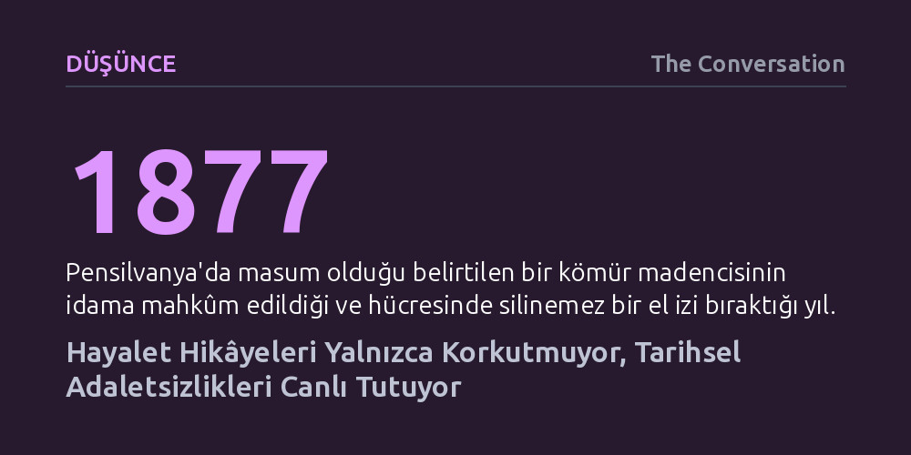

DUSUNCE · The Conversation · 2026-10-27
Hayalet anlatıları yalnızca ürperti yaratmakla kalmıyor; köle ticareti, işçi sömürüsü ve çözülmemiş cinayetler gibi resmi tarihin dışladığı adaletsizliklerin kolektif hafızada yaşamasını sağlıyor. Tekinsizlik unsuru, susturulmuş mağduriyetleri bugüne taşıyan canlı bir toplumsal arşive dönüşüyor.
Korku efsanelerini basit birer eğlence veya hurafe olarak görmek yerine, resmi tarihin üstünü örttüğü toplumsal adaletsizliklerin halk hafızasında yaşama ve direnme biçimi olarak kavramayı sağlar.

Cadılar Bayramı gibi dönemlerde anlatılan hayalet hikâyeleri genellikle anlık korku ve eğlence unsurları olarak tüketilir. Ancak bazı anlatıların zihinlerde silinmez izler bırakmasının ardında yalnızca basit bir ürkütme refleksi yatmaz. Kalıcı bir hayalet efsanesini var eden temel etmen, insanı tedirgin eden tekinsiz bir kurgu ile geçmişin bastırılmış karanlık gerçeklerinin bir araya gelmesidir.
Maine’deki Catherine Tepesi efsanesinde olduğu gibi—ıssız yolda görülen kadının arabaya alınmadığında ölümcül bir kazaya yol açacağı inancı—anlatılar güçlü bir tekinsizlik dozu barındırır. Fakat bu hikâyeler asıl derinliğini, resmi belgelerde yer bulamayan, unutturulmak istenen ya da üzeri örtülen tarihsel haksızlıkları kuşaktan kuşağa aktaran gayriresmî bir hafıza mekanizmasına dönüştüğünde kazanır.
Maine kıyılarındaki Acadia Ulusal Parkı yakınlarında, sisli ve mehtaplı gecelerde kayalıklardan duyulduğu rivayet edilen çığlıklar, transatlantik köle ticaretinin karanlık bir sayfasına dayanır. Köle ticaretinin uluslararası düzeyde yasaklandığı ancak ABD içinde köleliğin sürdüğü dönemde kaçakçılık yapan Pride of the Seas gemisinin mürettebatı, yakalanmamak için gemiyi batırarak ambardaki Afrikalı köleleri ölüme terk etmiştir. Görünmeyen bir hayalet gemiden yükselen yardım feryatları anlatısı, resmî kayıtlara geçmeyen bu acımasız katliamın halk belleğinde yaşamasını sağlar.
Benzer bir hafıza aktarımı Pensilvanya kömür madenlerinde de karşımıza çıkar. 19. yüzyıl ve 20. yüzyıl başlarında madencilerin maruz kaldığı ağır sömürü ve ölümcül çalışma koşulları, dönemin resmi tarihlerinde ve devlet politikalarında görmezden gelinmiştir. Buna karşılık, maden ocaklarındaki kazma sesleri, iniltiler ve görünmez vuruşlara dair hayalet anlatıları işçilerin yaşadığı trajediyi canlı tutmuştur. 1877 yılında masumiyeti savunulurken idama mahkûm edilen bir madencinin hücre duvarında bıraktığı ve hiçbir zımparalama ya da boyayla silinemeyen el izi efsanesi, sınıfsal ve adli adaletsizliğin toplumsal vicdandaki silinmezliğini simgeler.
Hayaletlerin birer adalet ve hafıza taşıyıcısı olma işlevi yalnızca Kuzey Amerika ile sınırlı kalmaz. Brezilya’nın kuzeyindeki Amazon havzasında yer alan eski bir şeker kamışı plantasyonunda, nehrin bulanık sularında genç erkek siluetlerinin görüldüğüne dair anlatılar asırlardır süregelmektedir. Bu doğaüstü iddialar, aslında 19. yüzyılda yerli halkın maruz kaldığı acımasız köleleştirme uygulamalarının ve plantasyon şiddetinin kuşaklar boyunca unutulmasını engelleyen canlı bir hatırlatıcıdır.
Rio de Janeiro’daki ünlü Flamengo Şatosu (Castelinho do Flamengo) anlatısı ise adaletsizliğin sınıfsal ve kurumsal boyutunu ortaya koyar. Ailesini kaybettikten sonra vasisi tarafından mirasını ele geçirmek amacıyla hapsedilen ve intihara sürüklenen genç mirasçı Maria de Lourdes Fernandes’in ruhunun konakta kaldığına inanılır. Bu efsane yalnızca bireysel bir trajediyi değil; savunmasız gençlerin istismarını ve yozlaşmış gücün yol açtığı yıkıcı sonuçları teşhir eden kolektif bir protesto işlevi görür.
Hayalet hikâyeleri geçmişi sadece pasif biçimde hatırlatmakla kalmaz; çözülmemiş suçları bugünün içine taşıyarak adaleti aramaya zorlar. 1898 yılında Maine’de vahşice katledilen ve cesedi başı gövdesinden ayrılmış halde bulunan 52 yaşındaki Sarah Ware’in faili meçhul cinayeti, aradan geçen bir asra rağmen bölge sakinlerinin hafızasından silinmemiştir. Dönemin bağımsız bir kadını olan Ware cinayetinin aydınlatılamaması, nüfuzlu erkeklerin soruşturmayı kendi suç ortaklıklarını gizlemek için yönlendirdiği şüpheleriyle birleşir.
Üstelik 1930’larda bölgeye su rezervuarı yapılırken kimsesizler mezarlığındaki mezar taşlarının taşınıp bedenlerin gölün dibinde terk edilmesi, sınıfsal ayrımcılığın ölüme bile nasıl yansıdığını belgeler. 1980’lerde aynı tekrarlayan kâbusu gören anne-kızın araştırmaları ve 2006’da göle dalan bir dalgıcın gördüğünü söylediği yüzsüz kadın silüeti, faili meçhul cinayeti yeniden gündeme taşımıştır. Bu vakada görüldüğü gibi, hayalet anlatıları resmi tarihin üstünü örttüğü sınıfsal ve toplumsal yaraları adeta kabaran bir deniz gibi tekrar tekrar bugünün kıyılarına vurur.